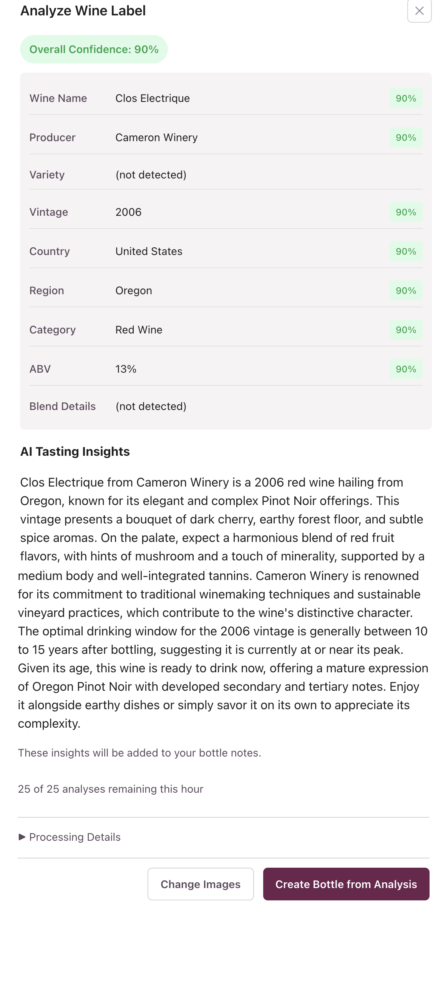
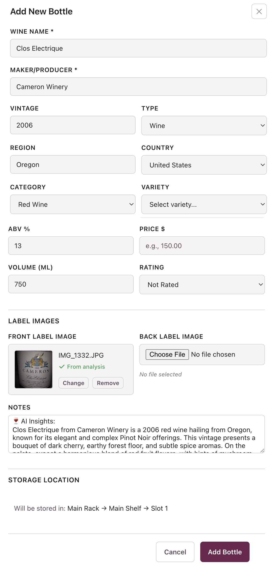

Welcome, Alpha Tester!
Thank you for being part of our alpha testing group. This guide will walk you through setting up your wine collection and help you explore the key features. Your feedback is invaluable — we want to know what works, what doesn't, and how we can make this better for wine enthusiasts like you.
🚀 Getting Started
1Sign Up & Verify Email
Create your account at cellar-manager-app.vercel.app. You'll receive a verification email — click the link to activate your account. Then sign in to get started!
2Create Your First Cellar
Think of "Cellars" as storage locations around your home. These could be:
- An actual wine cellar or wine room
- A 6-bottle rack in your kitchen
- A wine fridge in your dining room
- A storage closet with cases
Click "+ Create Cellar" and give it a descriptive name and note (e.g., "Kitchen Wine Rack - 6-bottle rack next to the refrigerator").
3Set Up Storage
Each cellar can have Rack Storage (shelves with individual bottle slots) and Case Storage (for bottles stored in their original cases).
For Racks:
- Click "+ Add Rack" to create a rack
- Click "+ Add Shelf" to add shelves to your rack
- Specify how many bottles each shelf holds
🍾 Adding Bottles - Three Ways
When you click on any empty slot, you'll see three options for adding a bottle:
📸 Analyze Label Walkthrough
Here's a step-by-step look at how the AI label analysis works, from clicking an empty slot to seeing your bottle stored in your library.
1 Click an Empty Slot
Click on any empty slot in your rack and you'll see three options: Analyze Label, Add Manually, or Store Existing Bottle. Select "Analyze Label" to use the AI.

2 Upload or Capture Your Label
Upload a photo of the front label (required) and optionally the back label. If you already have a photo of your bottle on your device, use the "Choose File" option. If not, the easiest approach is to use a mobile device and allow the browser to access your camera — you can snap a photo right from this screen.
Check "Include AI tasting insights" to get detailed information about the wine, including tasting notes, food pairings, drinking windows, and more.

3 Review the AI Analysis
The AI analyzes your label and extracts wine details — name, producer, vintage, region, ABV, and more. Each field shows a confidence score so you can see how certain the AI is about each piece of information. If "AI Tasting Insights" was enabled, you'll also see detailed notes about the wine's character, drinking window, and food pairing suggestions.
When you're satisfied, click "Create Bottle from Analysis" to proceed.

4 Confirm & Add the Bottle
The "Add New Bottle" form is pre-filled with all the AI-extracted data. You can review and edit any fields before saving — add a price, adjust the rating, or correct anything the AI may have missed. Your label photo and AI tasting notes are attached automatically. At the bottom, you'll see which slot the bottle will be stored in.
Click "Add Bottle" to save it to your collection.

5 Your Bottle in the Library
That's it! Your bottle is now stored in your cellar. The Bottle Details view shows all the information at a glance — wine name, producer, vintage, variety, region, storage location, and the full AI tasting insights. You can access this from your rack view or the Bottles tab at any time.

🎯 Flexible Workflows
Cellar Manager adapts to how you organize:
🎲 Slot-by-Slot
Click a slot → Add bottle → Place it immediately. Perfect for organizing an existing collection or adding bottles as you purchase them.
📋 Add First, Organize Later
Add all your bottles without assigning them to slots (they'll show as "Unassigned"). Then organize them into your racks later when you have time.
➡️ Next Available Slot
Add a bottle and automatically place it in the next empty slot. Great for quickly cataloging a large collection.
📊 After Adding Bottles
What Happens Next?
- AI Research Notes: The system attaches detailed research about your wine
- Winemaker Notes: If your wine is from a consortium member winery, you may receive notes directly from the winemaker
- Bottle Actions: Mark bottles as "Enjoyed," "Gifted," "Broken," or "Deleted"
- Tasting Notes: Capture your thoughts when you open a bottle
💬 We Need Your Feedback!
As an alpha tester, your honest feedback helps us build a better product. Please tell us:
- What's easy? Which features felt intuitive and natural to use?
- What works? What did you love? What solved a real problem for you?
- What sucks? Be brutally honest. What was confusing, frustrating, or broken?
- What would you change? Tell us "I'd rather do it this way..." or "It would be better if..."
- Did the AI get it right? How accurate was the label analysis?
Don't hold back — your critical feedback now means a better product for everyone later. Thank you for being part of this journey!